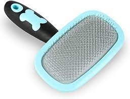
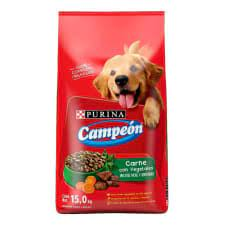

- Los perross necesitan cuidados especiales de acuerdo a los perros
- Los perros que tienen mas pelaje necesitan cepillados constantes mientras que los perros de pelaje corto no necesitan tantos cepillados
- Todos los perros tienen un tamaño dependiendo de su raza
- El tamaño de los perros determinan los años de vida y su necesidad alimenticia
- Cada tamaño de los perros tiene una necesidad alimenticia diferente

